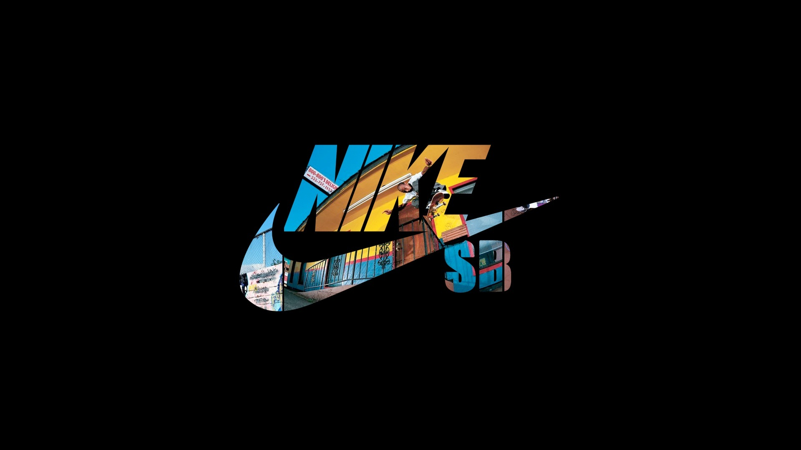

| Supreme |
Off-White |
Palace |
BAPE (A Bathing Ape) |
Stüssy |
Nike SB |
| Fondée à New York en 1994, Supreme est devenue une icône mondiale du streetwear, célèbre pour ses collaborations recherchées, ses designs audacieux et son image emblématique. |
Fondée par Virgil Abloh en 2012, Off-White a rapidement acquis une renommée internationale pour son esthétique avant-gardiste, sa fusion entre streetwear et haute couture, ainsi que ses collaborations avec des marques de luxe. |
Lancée à Londres en 2009, Palace est réputée pour son style distinctif inspiré du skateboarding et de la culture britannique. La marque est appréciée pour ses designs colorés et son attitude non conventionnelle. |
Créée par Nigo à Tokyo en 1993, BAPE est célèbre pour son imprimé de camouflage et son logo de singe, devenant ainsi une marque emblématique de la mode streetwear japonaise. |
Fondée en 1980 à Laguna Beach, en Californie, Stüssy est l'une des marques pionnières du streetwear. Elle est réputée pour ses designs emblématiques, son style californien décontracté et son influence durable sur la culture streetwear. |
Une division de Nike axée sur le skateboard, Nike SB est reconnue pour ses collaborations avec des skateurs professionnels et des marques de skate, ainsi que pour ses collections de chaussures et de vêtements streetwear inspirées par la culture du skateboard. |
| Site de Supreme |
Site de Off-White |
Site de Palace |
Site de Bape |
Site de Stüssy |
Site de Nike SB |
|
|
|
|
|
 |